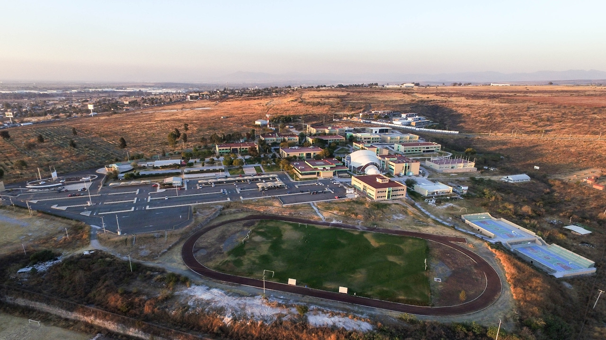

¿Cómo inicio mi pasión por la programación?
Quisiera iniciar que desde niño supe que me quería dedicarme a programar y que algún familiar sabía programar y que me orientarón, pero no... Así no son las cosas, quien tenga la dicha de esta bención que bueno, pero mi caso iniciar de otra manera. Desde niño ciertamente tengo un interes por las computadoras y por la tecnología, en la secundaría por el año 2013 tome un club o una clase extra donde nos enseñaban a usar las herramientas básicas como word, power point, excel, etc., además de aprender mecanografía, y hubo pocas clases, no más de 5, donde nos enseñarón a usar html fue una pagina básica que realizamos, pero mi interes no era mucho, despues en la prepa, en el 2015 ingrese a un cecyteg donde estuve en la carrera de mantenimiento y soporte de computo, de igual forma, mi interes era conocer más las computadoras y saber arreglarlas, y claro, aprendí esto, lo que no sabía o con lo que no contaba es que en esta carrera tecnica daban clases de redes y de programación, y en ese entonces, las clases de redes me parecían entretenidas, no entendí mucho al principio de la magnitud o de la importancia que tiene estas, yo solo sabía que debía hacer que hicieran ping los diferentes dispositivos, seán routers, switch, servodores, accespoint, etc., y bueno, en ese momento tambien tomaba clases de fundamentos de la progración, y lo que vivimos, por supuesto no fue programar, sino una libreta donde hacía figuras cómo circulos, cuadrados, etc., para resolver supuestos problemas, como sumas, compras, condiciones, etc., así es ya sabes entonces de lo que estoy hablando, los famosos diagramas de flujo, el que suene despectivo al mencionar los diagramas de flujo no deseo decir que no sirven, sino, al contrario, de hecho es bueno y aconsejo aprender primero a resolver problemas en papel, ya sea con diagramas de flujo o con otro tipo de diagramas que nos ofrezca UML (Lenguaje unificado de modelado) pero bueno, fuera de esto, despues de resolver problemas, nos fuimos a programar en visual studio con el lenguade de C#, y bueno, siendo honesto no tenia ni la menor idea de lo que hacía, y como era mejor en la materia de redes, pues un compañero hacía los programas de escritorio y aun los programas en la web que nos pedian de tarea, mientras yo trabajaba en lo de redes y bueno................................ Así fue la historia, como ven, fui muy indiferente en la programación.
¿Cómo termino apasionandome la programación?
Ahora, seguramente te estarás preguntando, el ¿cómo termine en esta carrera? y lo más loco, ¿cómo termino apasionandome la programación? Bueno, todo tiene que ver estando en la universidad, y debo decir, que doy gracias a Dios por todo lo que ocurrio, ya que debo decir que para entrar a la universidad fue un proceso largo, y llegue a no quedar en la universidad en la que deseaba en un principio... eso si, una cosa sabía al terminar la prepa y era tener una carrera, como había mencionado anteriormente me gustaba reparar computadoras, pero... ya no era tanto el interes, porque vi que podía emepzar siendo tecnico, ya que tambien me ponía a ver en la plataforma de youtube sobre esto, así que empece a ver más carreras, carreras que me llamaban la atención, pues veía en que soy bueno y que capacidades tengo, además de los test que ayudan a ver en que eres bueno o porque carrera irte, (¡¡¡OJO!!! NUNCA ME SALIO PROGRAMACIÓN O ALGO POR EL ESTILO) JAJAJA lo que siempre me salía eran tres cosas principalmente 1. Psicología, 2. Maestro y 3. Administración de Empresas, así que realmente estas fuerón mis alternativas junto con la ingeniría en Industrial, aun que hay más historia, para no hacerlo tan largo, me decido entrar al ITESI (Instituto Tecnologico Superior de Irapuato) y puse como 1era opción Ing. Gestion Empresarial y como segunda opción pongo Ing. Sistemas Computacionales y quede en esta segunda opción pero como resagado, y bueno, mis planes erán el cambiarme de carrera en el primer semestre, como dije, estos fuerón mis planes, porque en realidad sucedio otra cosa, nos dio un profe la materia de fundamentos de programación, y con el tuvimos que resolver, más de 40 problemas en diagramas de flujo y programarlos, y aun que no lo creas, eso y junto con sus platicas sobre las oportunidades y las cosas que puedes hacer con la programación hizo que me empezará a gustar, al termino del semestre, me dije a mi mismo, no, ya no te cambias de carrera, así que a partir de ahí tanto en la escuela me enseñarón cosas básicas como me encargarón proyectos, así mismo en mi casa, por mi cuenta seguía aprendiendo como hasta hoy y solo puedo decir:
Gracias a Dios puso los medios para poder ver la hermosura de esta carrera, en la cual hoy en día, me encanta poder estar.
Les enseño foto de la institución tecnologica (ITESI)
